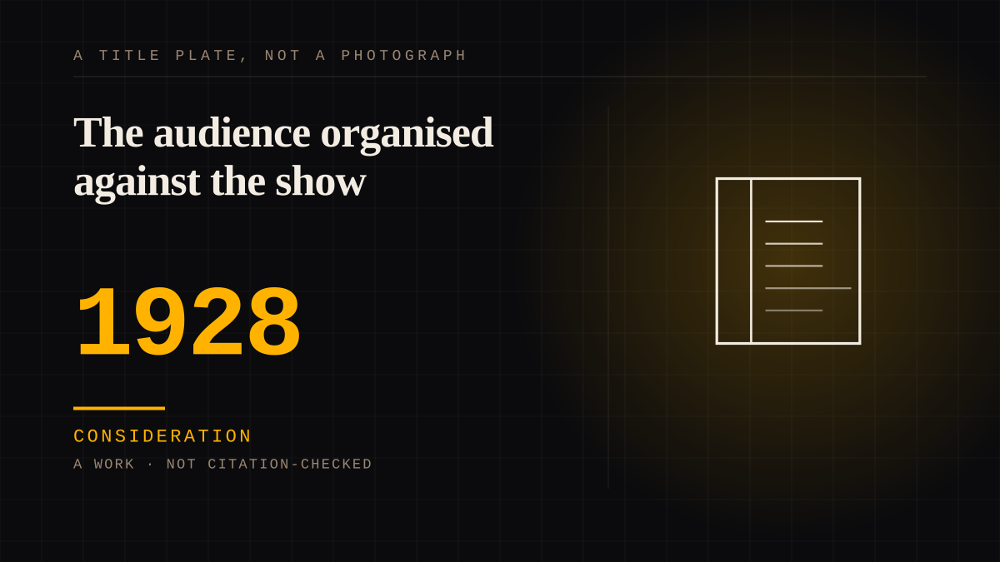

A work · 1928 · Radio
The audience organised against the show
Two white broadcasters voiced two fictional black men from March 1928, and at its peak about forty million listeners a night followed their fortunes - half the nation's radios, by one estimate. The audience the show loved most was also the one it caricatured, and from 1931 that audience organised.

The audience that loved the show most was the one it caricatured, and that audience organised. Amos 'n' Andy began on WMAQ in Chicago on 19 March 1928, created, written and voiced by two white performers, Freeman Gosden and Charles Correll, playing two fictional black men. It grew out of Sam 'n' Henry, which had itself begun as the pair's attempt to adapt a comic strip for radio - the broadcast history in the records calls the show a "radio comic strip". By the 1930-31 peak the audience was enormous: roughly forty million listeners a night, half the nation's radios by the Smithsonian's count, listening to a nightly serial that the record calls the fountainhead of both the situation comedy and the soap opera.
The complaint ran through the same machinery the fandom ran. After a December 1930 attack in Abbott's Monthly by Bishop W. J. Walls, the Pittsburgh Courier pushed a six-month campaign, and the reference account records that more than 700,000 African-Americans petitioned the Federal Radio Commission about the show's stereotyping in 1931. The television version, with an all-Black cast told to keep its voices close to the white originals, drew the NAACP's formal protest within days of its June 1951 premiere: its bulletin on why the show should be taken off the air itemised the stock figures - "every character is either a clown or a crook". CBS cancelled the show in 1953; the sponsor had discontinued its advertising the same June.
This is the corpus's diagnostic for an audience that exists as an institution rather than a screen: its machinery is its own. A newspaper campaign, a petition to a regulator, a sponsor's boycott notice - each acted on people who were not members of anything the audience owned. The attachment to the characters was real enough to make the complaint precise, and the complaint was that the images were not theirs to love.
Consideration. The part where somebody stops and thinks. The research, the diagnosis, the ethics, the lawsuits, the regulators. Roughly fifty years of arguing with itself about whether this is a relationship.
Where it sits
1900 1900-1949 · 1928 1949
Provenance · 4 source record(s)
- unverifiedThe premiere on 19 March 1928 on WMAQ, the Gosden and Correll credits, the 40-million peak audience of 1930-31, the 1931 petition by more than 700,000 African-Americans to the Federal Radio Commission, the 1951-53 television series and the NAACP bulletin with its itemised characterizations, Blatz withdrawing sponsorship in June 1953, and syndication until 1966. Read through a search index rather than fetched, so the record is unverified: a reader can open this page, this agent did not.Wikipedia, "Amos 'n' Andy" ↗
- unverifiedThe serial's shape as the industry recorded it: the "radio comic strip" framing and the WGN origins around adapting The Gumps, the January 1926 start of Sam 'n' Henry, the move to WMAQ with disc syndication - the "chainless chain" - the claim that it was the fountainhead of the situation comedy and the soap opera, and the 1930-31 audience that exceeded 40 million. Read through a search index rather than fetched, so the record is unverified: a reader can open this page, this agent did not.Museum of Broadcast Communications, "Amos 'n' Andy" (radio encyclopedia) ↗
- unverifiedThe broadcast records the entry leans on: origin on WMAQ on 19 March 1928, claim to be the longest-running radio program in broadcast history, the 1951-53 television version as the first series with an all-Black cast, the NAACP's attempted injunction against its premiere, and the advertising trade's reported "No Negro performers allowed". Read through a search index rather than fetched, so the record is unverified: a reader can open this page, this agent did not.Television Academy (interview archive), "Amos 'n' Andy" ↗
- unverifiedThe scale claim in one line: "As many as 40 million people - over half of the nation's radios - tuned in each week"; the show's roots in 19th-century blackface minstrelsy and the way radio let the performers stress the oral side of the form. Read through a search index rather than fetched, so the record is unverified: a reader can open this page, this agent did not.Smithsonian Magazine, "The Long, Unfortunate History of Racial Parody in America" (G. DuBois Shaw, 2016) ↗
Not yet stood behind. The entry is real. A person has not read the citation and confirmed it, so treat the date as approximate until they do.
INSTITUTION The fandom as institution
Connected · 2 out, 0 in
It sits in
The full timeline → · The database → · See it in the atlas →